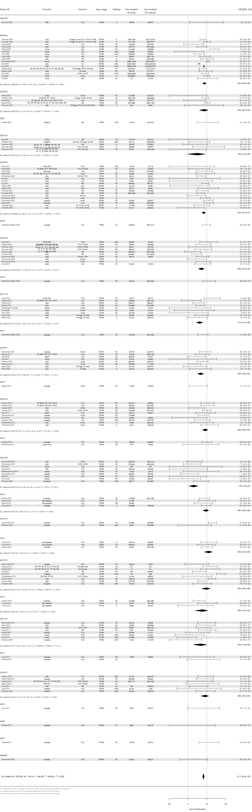

8 Working-age adults 18 to 64 years
This age group has a lower age limit of ≥15 and upper limit of ≥60 yearsFigure 8.1: VE estimates against any influenza (A and B), working age adults 15-65y
| Group | No. estimates | Summary estimate | I^2 | Cochran’s Q | tau^2 | p |
|---|---|---|---|---|---|---|
| 2006/07 | 1 | Too few to estimate | - | - | - | - |
| 2007 | 1 | Too few to estimate | - | - | - | - |
| 2008 | 1 | Too few to estimate | - | - | - | - |
| 2010 | 1 | Too few to estimate | - | - | - | - |
| 2010/11 | 7 | 46% (34 to 55) | 0.0 | 2.72 | 0.000 | 0.843 |
| 2011 | 2 | Too few to estimate | - | - | - | - |
| 2011/12 | 8 | 34% (13 to 50) | 68.5 | 22.21 | 0.105 | 0.002 |
| 2012 | 3 | 38% (18 to 54) | 24.3 | 2.64 | 0.019 | 0.267 |
| 2012/13 | 9 | 49% (36 to 59) | 64.5 | 22.55 | 0.067 | 0.004 |
| 2013 | 3 | 55% (43 to 65) | 0.0 | 0.35 | 0.000 | 0.839 |
| 2013/14 | 2 | Too few to estimate | - | - | - | - |
| 2014 | 4 | 48% (39 to 56) | 0.0 | 0.60 | 0.000 | 0.896 |
| 2014/15 | 9 | 15% (2 to 27) | 14.0 | 9.30 | 0.007 | 0.317 |
| 2015 | 2 | Too few to estimate | - | - | - | - |
| 2015/16 | 10 | 46% (38 to 53) | 31.3 | 13.10 | 0.015 | 0.158 |
| 2016 | 1 | Too few to estimate | - | - | - | - |
| 2016/17 | 8 | 34% (25 to 42) | 18.5 | 8.59 | 0.006 | 0.284 |
| 2017 | 1 | Too few to estimate | - | - | - | - |
| 2017/18 | 9 | 31% (21 to 40) | 23.9 | 10.51 | 0.009 | 0.231 |
| 2018 | 1 | Too few to estimate | - | - | - | - |
| 2018/19 | 10 | 36% (27 to 44) | 34.7 | 13.78 | 0.014 | 0.130 |
| 2019 | 1 | Too few to estimate | - | - | - | - |
| 2019/20 | 18 | 42% (37 to 47) | 22.8 | 22.01 | 0.007 | 0.184 |
| 2021/22 | 5 | 25% (-3 to 46) | 25.8 | 5.39 | 0.034 | 0.250 |
| 2022 | 1 | Too few to estimate | - | - | - | - |
| 2022/23 | 5 | 43% (30 to 54) | 56.4 | 9.18 | 0.026 | 0.057 |
| 2023/24 | 17 | 44% (39 to 48) | 89.3 | 150.13 | 0.021 | <0.001 |
| 2024/25 | 1 | Too few to estimate | - | - | - | - |